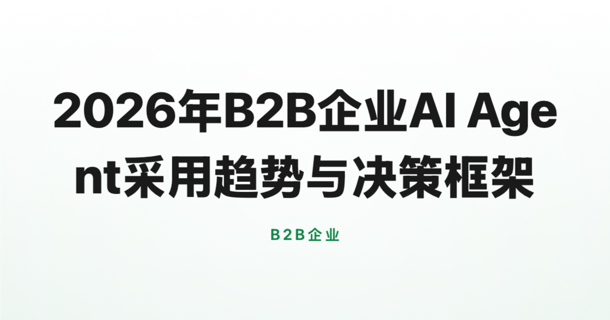
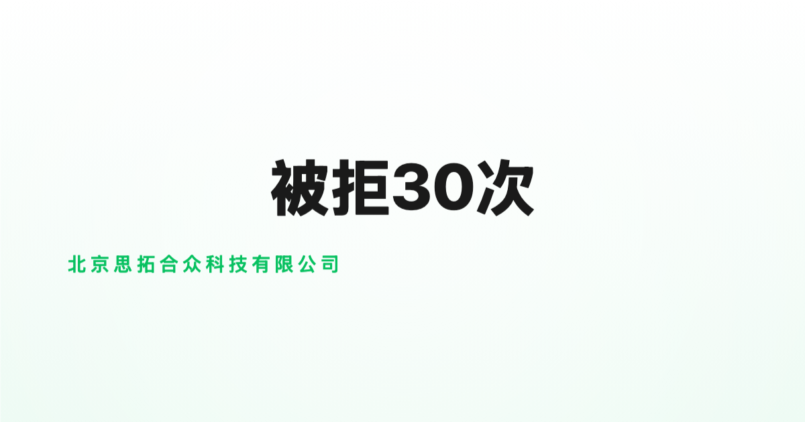
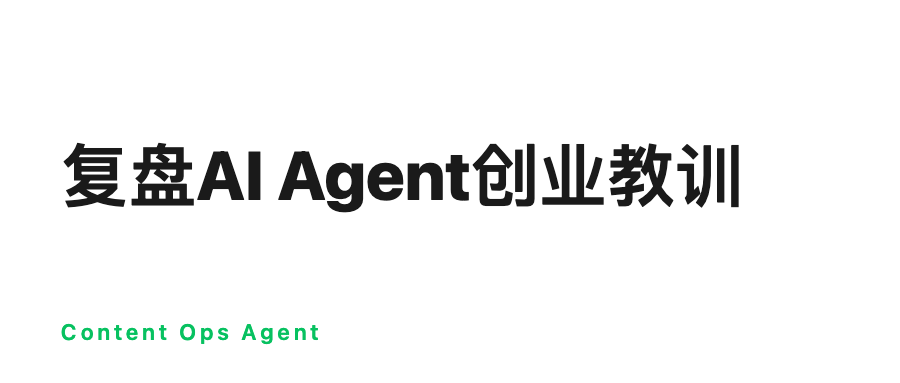
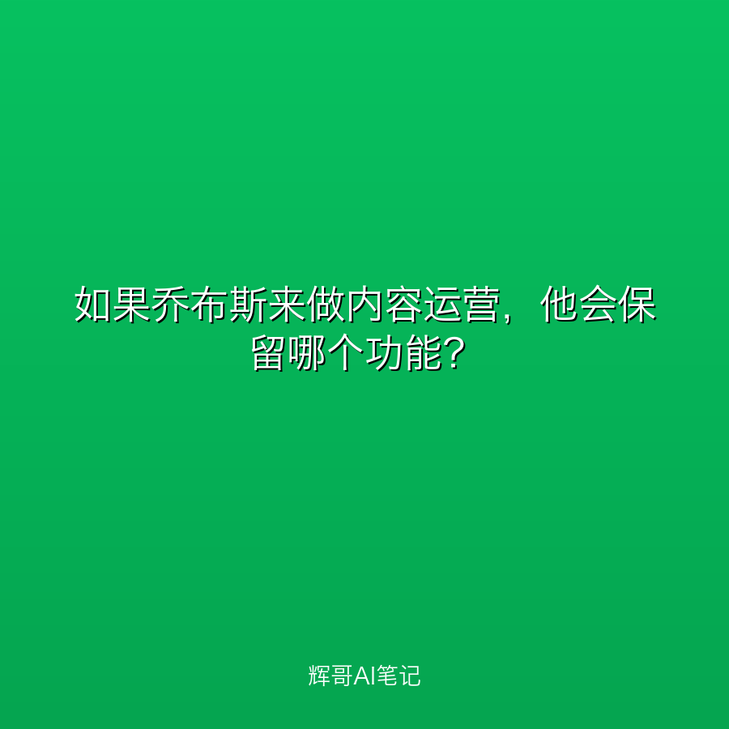
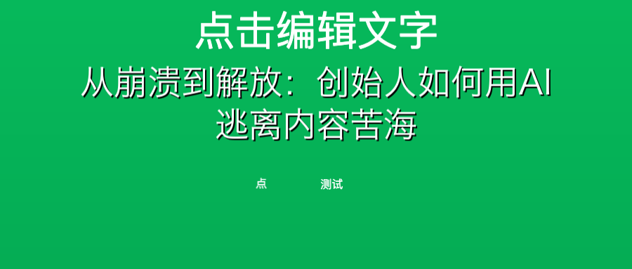
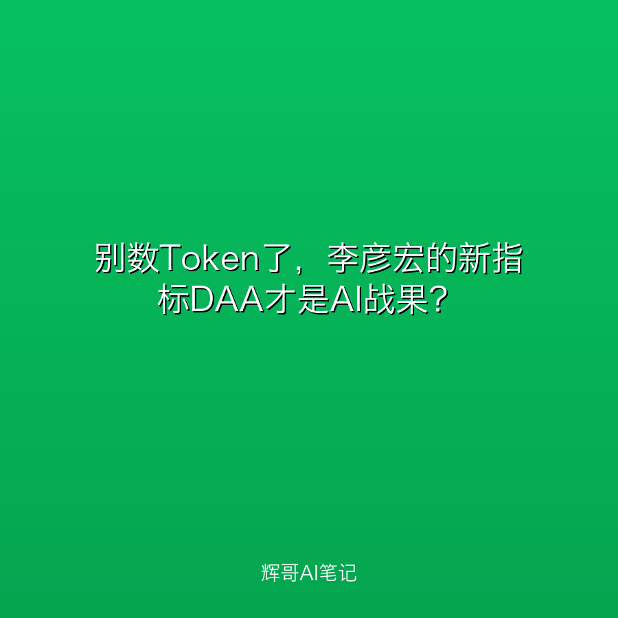

明明懂专业，AI却不听话？你该试试这种新玩法
当通用大模型触及天花板，AI下一轮效率革命将发生在高专业壁垒的垂直领域。MiniMax推出'10x Team'计划，通过'产业研究合伙人机制'引入行业专家，将隐性经验转化为模型能力，解决模型'能写但不能用'的产业断层问题。
多平台内容分发与数据回流
当通用大模型触及天花板，AI下一轮效率革命将发生在高专业壁垒的垂直领域。MiniMax推出'10x Team'计划，通过'产业研究合伙人机制'引入行业专家，将隐性经验转化为模型能力，解决模型'能写但不能用'的产业断层问题。

大多数SaaS死于缺乏核心前提。本文以CreBee为例，指出AI原生产品应做认知伙伴而非效率工具，强调安全与智能的平衡才是业务护城河，最终从人工作业转向智能体协作。

2026年B2B企业需从传统SaaS转向Agent，用AI替代人力，通过Context Engineering和智能体降低门槛，中小企业应抓住低代码机遇，聚焦算力与智能体而非人头，避免技术马太效应。

当私募机构招聘16岁高中生操作数亿资金，AI军备竞赛的底线在哪里？技术红利是否掩盖了风险？本文深度剖析AI时代的合规与公平问题。

技术自嗨让多少AI团队死掉？我们复盘Content Ops Agent技术栈教训：从Chat到Agent的上下文管理、MCP协议必选、IP隔离血泪史。避开这些坑，省下一半试错成本。
谷歌在Android发布会上宣布，Android将从操作系统转向智能系统，通过Gemini Intelligence实现多模态、跨环境的AI助理能力，让系统主动介入用户操作。

人形机器人行业因功能堆砌而亏损，内容运营同样陷入工具复杂度陷阱。CreBee 砍掉 80% 花哨界面，用极简主义实现 10 人团队管理 100 账号、集成时间从 3 天缩至 4 小时。

初创CEO没时间写公众号？内容运营琐碎耗时？CreBee创始人亲述：如何用AI智能体解放老板，把排版发布自动化，让你专注战略。

李彦宏在百度Create大会上提出DAA（日活智能体数），认为Token只衡量成本而非收益，呼吁从数Token转向数战果。

Meta AI负责人亚历山大王首次公开回应争议：140亿美元收购后，他组建超级智能实验室，9个月推出Muse Spark，认为AI终局尚未到来，算力差距将分裂行业。
订阅以获取最新内容